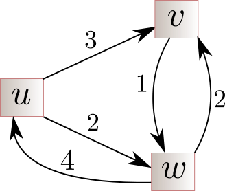

Nathanaël Fijalkow
CNRS, LaBRI, Bordeaux, and The Alan Turing Institute of data science, London
Parity games: the quasipolynomial era
Universal trees
Question: what is the smallest tree containing all trees of height $2$ with $5$ leaves?
$\qquad$
Definition: A tree is $(n,h)$-universal if it contains all trees of height $h$ with $n$ leaves
Theorem ([F.]):
- There exists a $(n,h)$-universal tree of size $\binom{h + \log(n)}{h}$
- This upper bound is asymptotically tight
Remark: the number $\binom{h + \log(n)}{h}$ is
- $O(n^{\log(h)})$ in general
- $n^{O(1)}$ for $h = O(\log(n))$
Upper bounds
We construct a $(n,h)$-universal tree.
Inductively
- $T_\text{middle}$ a $(n,h-1)$-universal tree
- $T_\text{left}$ a $(\lfloor n/2 \rfloor,h)$-universal tree
- $T_\text{right}$ a $(n - 1 - \lfloor n/2 \rfloor,h)$-universal tree
Fact: there exists a
balanced node
Lower bounds
$$g(n,h) = \sum_{d = 1}^n g(\lfloor n / d \rfloor,h-1)$$
Let $T$ a $(n,h)$-universal tree and $\delta \in [1,n]$.
Claim: the number of nodes at depth $h-1$ of degree $\ge \delta$ is at least $g(\lfloor n / \delta \rfloor,h-1)$.
Claim: $T_\delta$ is $(\lfloor n / \delta \rfloor,h-1)$-universal
Parity games
Parity: the maximal priority appearing infinitely often is even
Solving parity games
INPUT: A parity game and initial vertex $v_0$
QUESTION: Does Eve have a winning strategy from $v_0$?
Parameters: $n$ (number of vertices), $m$ (number of edges) and $d$ (number of priorities)
Best algorithm
$$O \left( m \cdot \binom{d/2 + \log(n)}{d/2} \right) = O(n^{\log(d)})$$
Why might you care?
Parity games play a crucial role in:
- LTL synthesis
- automata and logic over infinite trees (emptiness games)
- modal mu-calculus (model-checking games)
But also complexity: in $\textrm{NP} \cap \textrm{coNP}$, not known to be in $\textrm{P}$!
Positional strategy
$$\sigma : V \to E$$
Theorem: If Eve has a winning strategy in a parity game, she also has a positional winning strategy. The same holds for Adam.

Definition: A graph
satisfies parity if all paths in the graph satisfy parity
Remark: if $\sigma$ is a positional winning strategy, then $G_{\sigma}$ satisfies parity
Separating automata
$$\text{Parity}_{n,d} = \bigcup \left\{ \text{Paths}(G) : \begin{array}{c} G \text{ is an } (n,d)\text{-graph} \\ \text{satisfying parity}\end{array} \right\}.$$
Definition: A deterministic safety automaton $A$ reading $[1,d]^\omega$ is separating if
$$\text{Parity}_{n,d} \subseteq L(A) \subseteq \text{Parity}$$
Reduction to safety games
Let $G$ parity game, $A$ separating automaton.
Construct safety game $G \times A$: $A$ reads the priorities
Lemma: Eve has a winning strategy in $G$ if and only if she has a strategy to play forever in $G \times A$
Algorithm: Solve the safety game $G \times A$, complexity $m \cdot |A|$
Lemma: Eve has a winning strategy in $G$ if and only if she has a strategy to play forever in $G \times A$
Proof:
If Eve wins in $A$ she has a positional strategy. Then $G_{\sigma}$ satisfy parity, so $\text{Paths}(G) \subseteq L(A)$
If Eve wins in $G \times A$ then this strategy is winning in $G$ because $L(A) \subseteq \text{Parity}$
Cleaner definition: good for small games automata
Equivalence
Theorem: [CDFJLP], [CF]
- A separating automaton induces a universal tree of the same size
- A universal tree induces a separating automaton of the same size
Corollary: A universal tree yields an algorithm for parity games
Three similar stories
good for small games, value iteration, and fixed point are families of algorithms for parity games,
parametrised by the choice of a universal tree!
Beyond parity
Definition: A graph
satisfies W if all paths in the graph satisfy W
Definition: A (graph) homomorphism is $\phi : V \to V'$ st
$$(v,w,v') \in E \Longrightarrow (\phi(v),w,\phi(v')) \in E$$
Definition: A graph $U$ is
$(n,W)$-universal if
- it satisfies W
- all graphs of size $n$ satisfying W can be homomorphically mapped into $U$
Reduction to safety games
Let $G$ game with objective W and $U$ a $(n,W)$-universal graph.
Construct safety game $G \times U$
Lemma: Eve has a winning strategy in $G$ if and only if she has a strategy to play forever in $G \times U$
Algorithm: Solve the safety game $G \times U$, complexity $m \cdot |U|$
Happening now
with
universal graphs
- New algorithms for mean payoff games (F., Gawrychowski, Ohlmann)
- Logical implications (Dawar, F., Lehtinen)
- Combining parity with other objectives (Anand, F., Leroux)
- Combination of mean payoff objectives
Also: understanding
strategy improvement, exponential lower bounds (F., Perez, Raha)